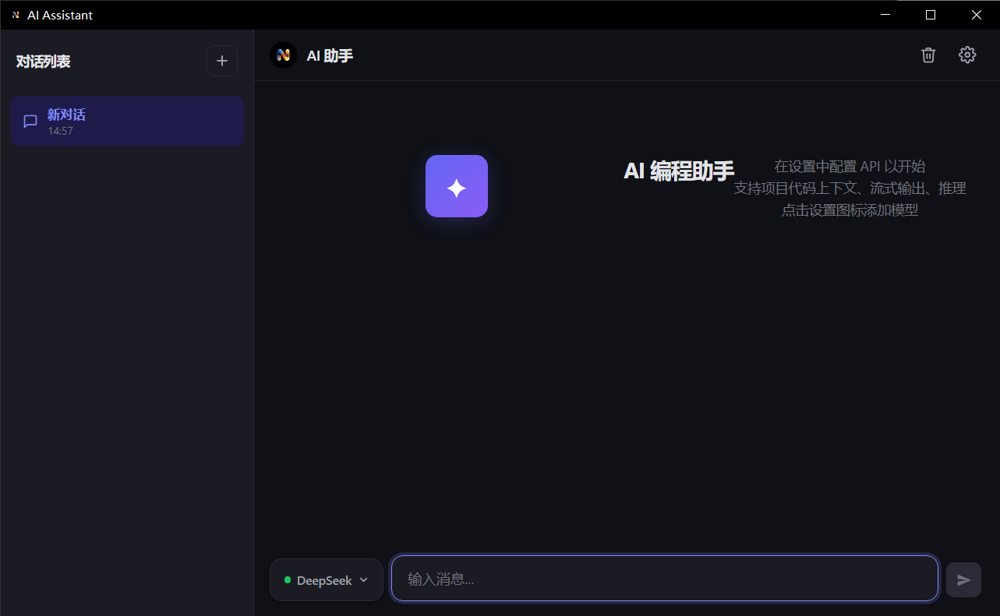
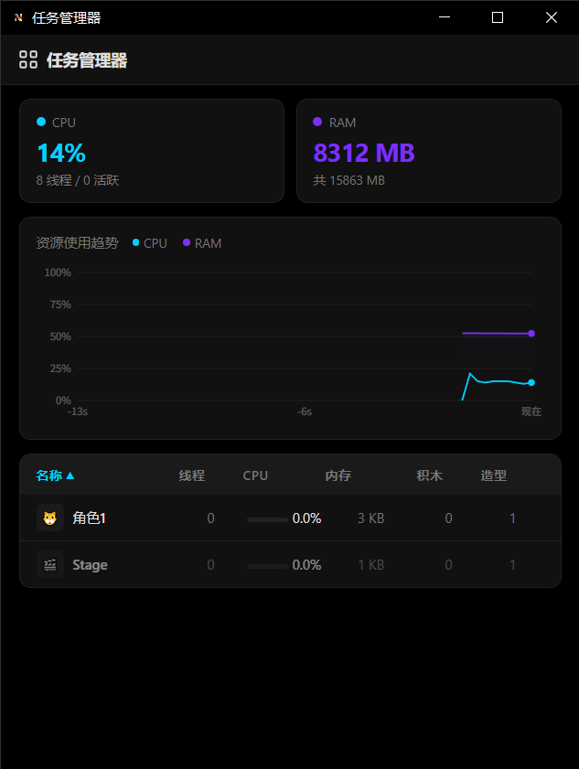
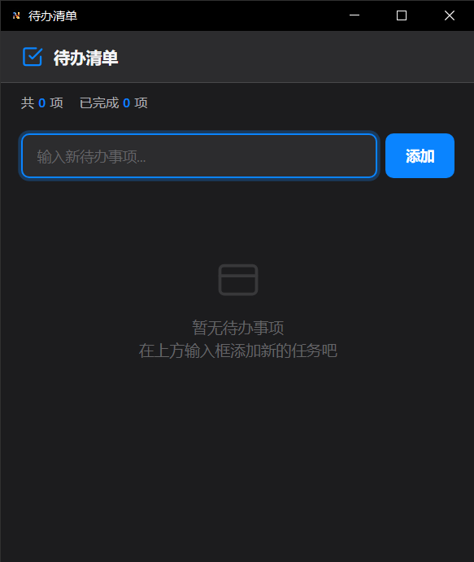
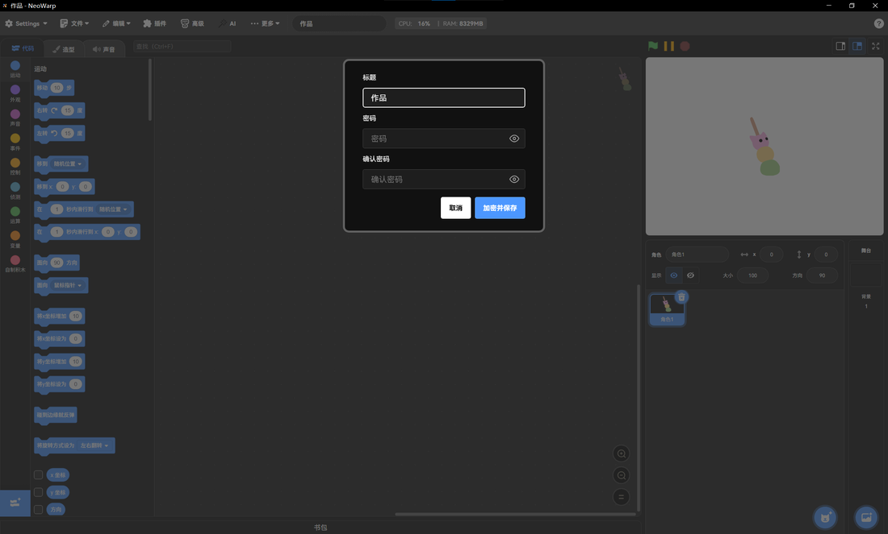
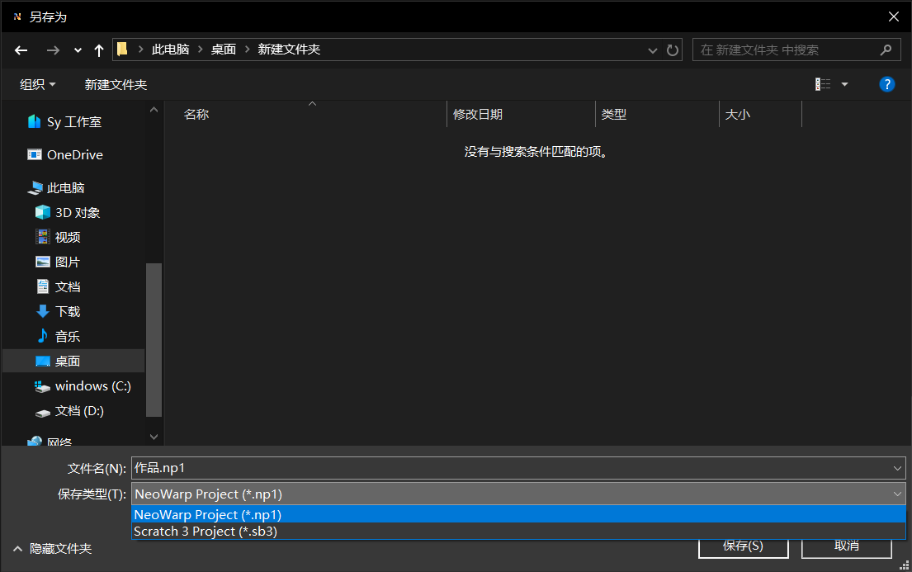

内置独立 AI 助手窗口，支持 OpenAI、DeepSeek、智谱 GLM、Kimi、通义千问等多家服务商，能够读取当前项目结构、应用修改到工程或精灵，让 AI 直接参与你的创作流程。

独立的任务管理器窗口，实时显示系统 CPU 与内存占用率，并以折线图展示资源使用趋势。同时统计每个角色的线程数、CPU 占用、内存估算、积木数与造型数，帮助你精准定位性能瓶颈。

内置待办清单窗口，让你在创作过程中随时记录灵感与任务。支持添加、编辑、删除、完成标记，数据自动保存在本地，无需担心丢失。简洁的界面与流畅的交互，让创作更专注。

独创 .npnp 加密工程格式，为你的 Scratch 项目加上一层密码保护。保存时设置密码，打开时需要输入正确密码才能解密。无论是未完成的作品还是商业项目，都能安全存储。

NeoWarp 原生支持 .np1 未压缩工程格式，同时完全兼容 Scratch 3 (.sb3)、Scratch 2 (.sb2) 和 Scratch 1 (.sb) 格式。文件关联已集成到系统，双击即可用 NeoWarp 打开。

独创 .viewsb3 只读分享格式，让你在分享作品时隐藏源码。对方打开后只能看到全屏舞台，无法查看或编辑积木代码。适合分享成品作品，同时保护你的创作思路。